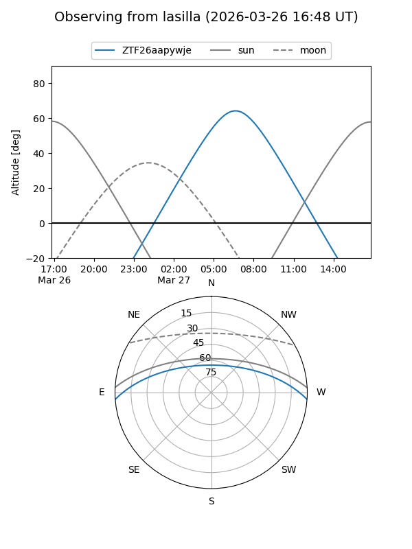
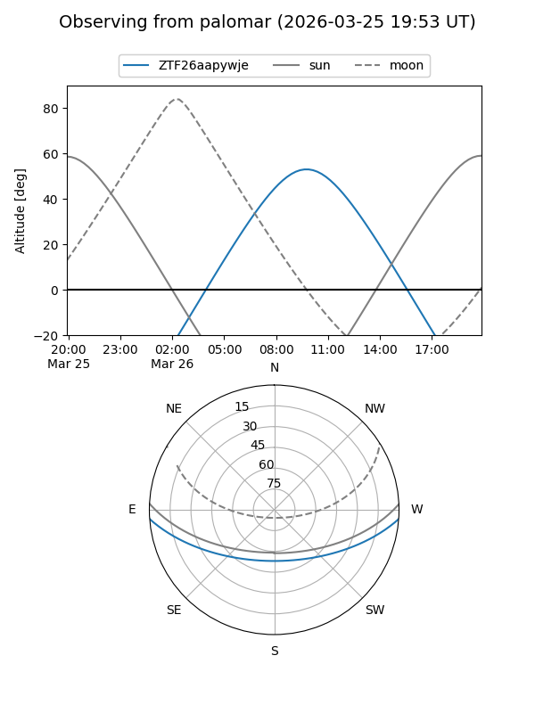

ZTF26aapywje
Target ZTF26aapywje at 2026-03-26 09:49
Aliases and brokers:
FINK: link
Lasair: link
ALeRCE: link
alt names
ZTF26aapywje (ztf,fink_ztf)
Coordinates:
equatorial (ra, dec) = 213.1172,-3.43850
equatorial (HMS+DMS) = 14:12:28.14,-03:26:18.62
galactic (l, b) = (338.6655,+53.71523)
Flags:
Photometry:
last ztfg=19.98
1 ztfg detections
Lightcurve
Visibility


Additional plots